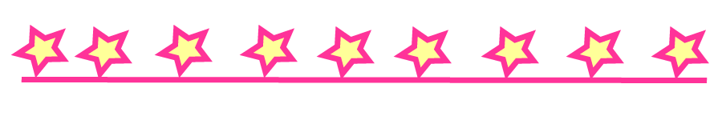

About
Candy Coil was founded in 2017 in order to help bring together members of the natural hair community. We offer natural hair care tips and styling advice.
Our main focus and goal is to create an online environment where women of all hair types and textures can come to gain knowledge on proper hair care techniques.
Our site is currently ran by two spunky women who envision the site growing to reach women all over the world.
Meet The Writers
Sasha Jana Doe
Sasha grew up in Martinsville, Maryland and has been natural her entire life.
She currently owns a small hair salon in Ville County specializing in healthy hair maintenece.

Dana Jane Doe
Dana grew up in the midwest and relocated to Martinsville after college.
She began her natural hair care journey after becoming a mother.
Dana wants to show her children that their natural hair is as beautfiul as they are.